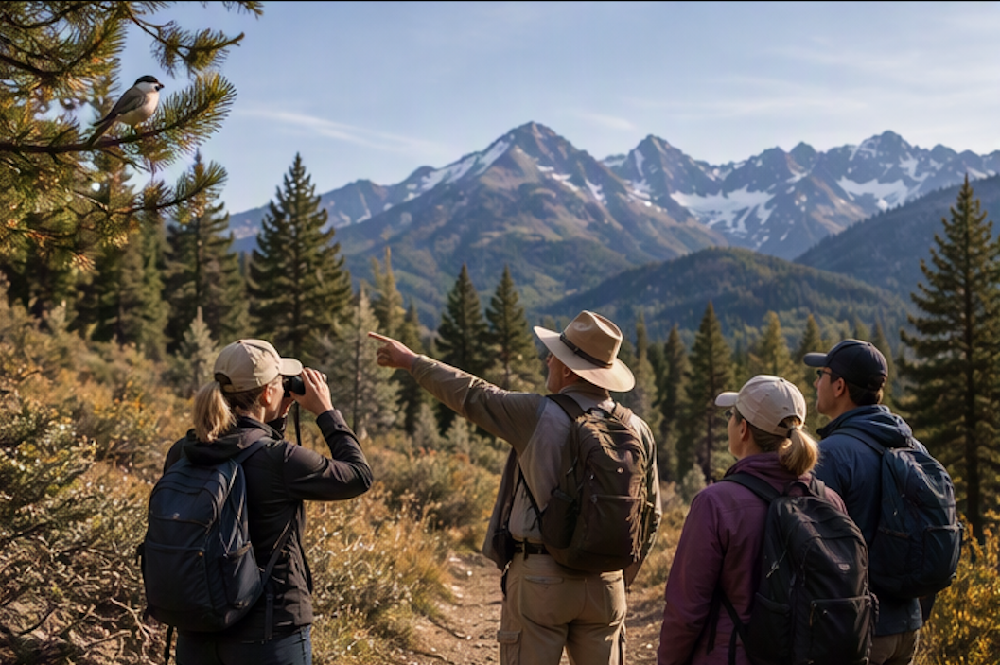
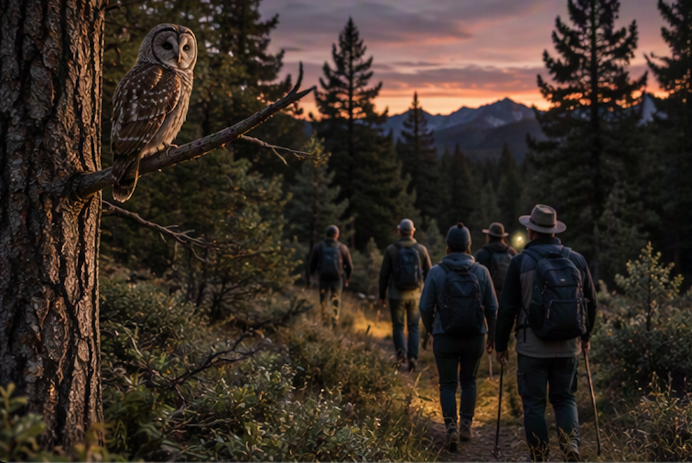
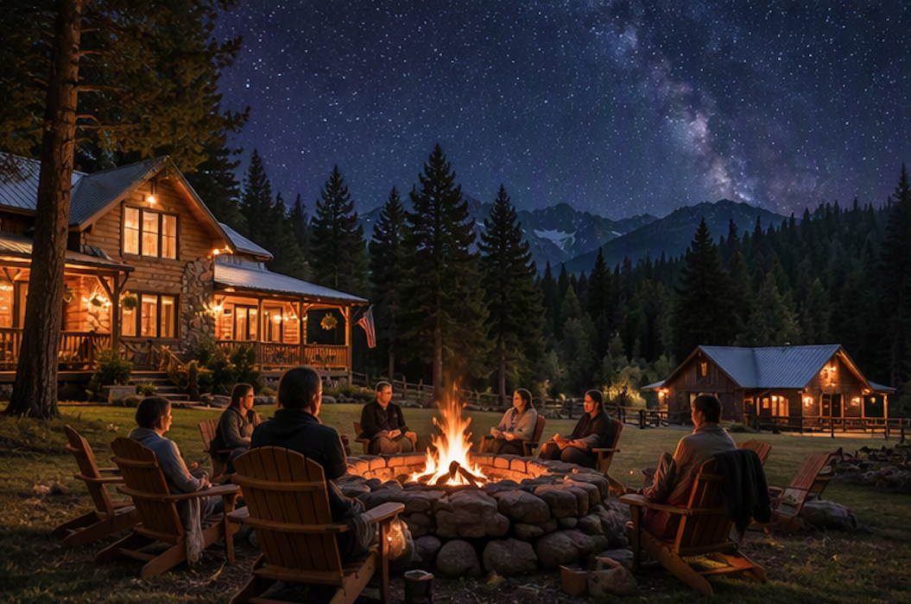
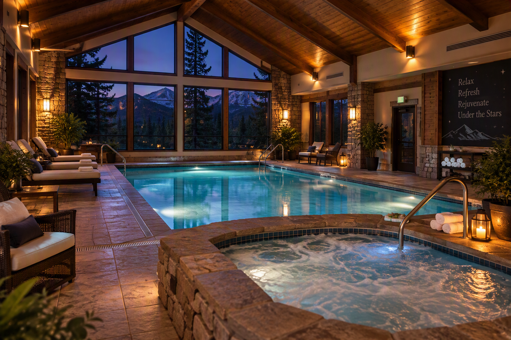
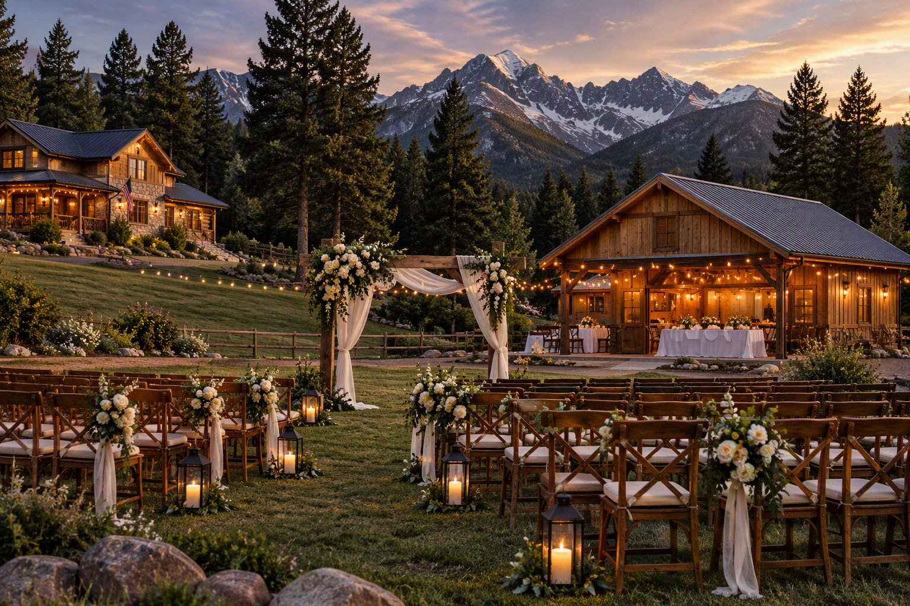

Starlight Haven Events and Experiences
Starlight Haven offers plenty of things to do throughout your stay. Guests can enjoy guided nature walks, bird spotting, nearby mountain trails, and river floating during the warmer months. Evenings are perfect for owl spotting, stargazing, or relaxing around the firepit. An indoor pool and hot tub are also available for guests who would rather spend some time relaxing at the Haven.
Weekend Events
Welcome Under the Stars
Friday | 9:15 PM - 10:30 PM
Friday nights start around the firepit with warm drinks, s'mores, and stargazing. It is a great way to spend your first evening at Starlight Haven and enjoy the mountain night sky.
Season: Year-round, weather permitting.
Morning Bird Walk
Saturday | 9:30 AM - 10:30 AM
Saturday mornings offer a guided nature walk along the trails surrounding Starlight Haven. Along the way, there are plenty of opportunities for bird spotting, watching for other wildlife, and enjoying the mountain scenery.
Season: Spring through fall.
Twilight Owl Walk
Saturday | Departure varies with sunset
As the sun starts to set, head out for a guided hike along the nearby trails. The evening hours are a great time to listen for owl calls, spot owls in the trees, and watch for other wildlife along the way.
Season: Spring through fall, weather permitting.


Fireside Stargazing
Saturday | 9:30 PM - 11:00 PM
Saturday ends back at the firepit with refreshments and stargazing. Spend the evening looking for constellations or relaxing by the fire while taking in the clear mountain sky.
Season: Year-round, weather permitting.
Explore and Unwind
River Floating
During the summer, the nearby river is a great place to spend part of the day. Float the river, enjoy the mountain views, and then head back to Starlight Haven in time for dinner.
Season: Summer, conditions permitting.
Mountain Trails and Scenic Walks
There are plenty of nearby trails to explore during your stay. Choose a short scenic walk or spend more time hiking one of the longer trails while taking in the views of the San Juan Mountains.
Indoor Pool and Hot Tub
After a day of hiking, river floating, or exploring nearby towns, the indoor pool and hot tub offer a place to slow down and relax. Both are available throughout your stay and can be enjoyed no matter what the weather is like outside.


Weddings and Special Celebrations
Starlight Haven also has a separate event building for weddings, anniversary celebrations, birthday parties, and other special events. The space gives you a private place for your celebration while keeping everything close to the main Bed and Breakfast.
